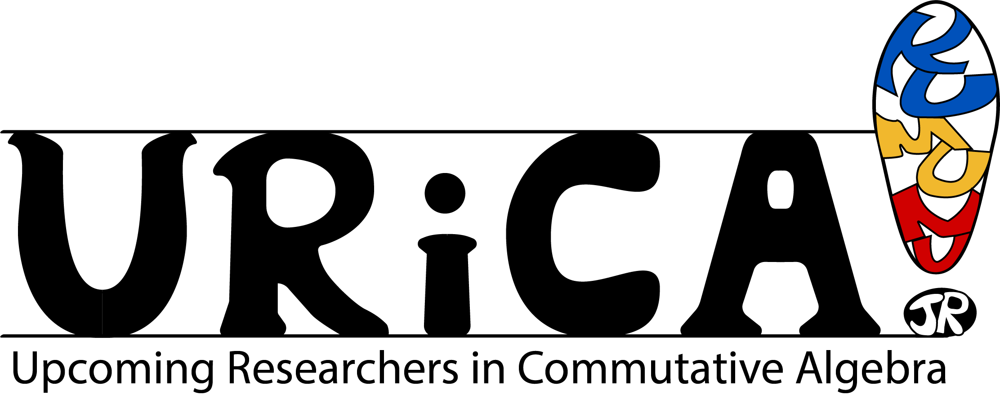

Registration/Opening Remarks
Opening Remarks
Speaker: Tim Tribone
Title: Matrix factorizations and Knörrer’s Theorem
Abstract: A local ring is said to have finite Cohen-Macaulay type if there are only finitely many indecomposable maximal Cohen-Macaulay modules up to isomorphism. The classification of such rings is far from complete; we understand small dimensions and the case of a hypersurface ring, but that is essentially it. This talk will focus on the key tool used in proving the hypersurface case: matrix factorizations. We will introduce the basics of the theory and explain how these objects were used in the classification of hypersurface rings of finite Cohen-Macaulay type. Along the way, we will address some natural questions inspired by the classification regarding “\(d\)-fold” matrix factorizations. This is joint work with Graham Leuschke.
Speaker: Srishti Singh
Title: Prinicpal Matrix of a Class of Numerical Semigroups
Abstract: In this talk, we explore a specific class of numerical semigroups, \( \mathcal R(p, q)\), constructed by Kunz and Waldi containing two coprime numbers \(p < q \), which we call K-W semigroups. We characterize K-W numerical semigroups of embedding dimension \(4\) by their principal matrices. Principal matrices of a numerical semigroup with embedding dimension n are specialized \(n \times n\) integer matrices of rank \(\leq n − 1\) that carry vital information about the semigroup. We present a necessary and sufficient criterion for a matrix to be the principal matrix of a K-W semigroup
Break
Speaker: Teresa Yu
Title: Standard Monomial Theory Modulo Frobenius in Characteristic Two
Abstract: Over a field of characteristic zero, standard monomial theory and determinantal ideals provide an explicit decomposition of polynomial rings into simple \(\mathrm{GL}_n\)-representations, which have characters given by Schur polynomials. In this talk, we present work towards developing an analogous theory for polynomial rings over a field of characteristic two modulo a Frobenius power of the maximal ideal generated by all variables. In particular, we obtain a filtration by modular \(\mathrm{GL}_n\)-representations whose characters are given by certain truncated Schur polynomials, thus proving a conjecture by Gao-Raicu-VandeBogert in the characteristic two case. This is joint work with Laura Casabella.
Conference Photo and Lunch
Speaker: Ayah Almousa
Title: Stirling numbers and Koszul algebras with symmetry
Abstract: Stirling numbers \(c(n, k)\) and \(S(n, k)\) of the first and second kind are the answers to two counting problems: how many permutations of \(1, . . . , n\) have \(k\) cycles, and how many set partitions of \(\{1, . . . , n\}\) have \(k\) blocks? The \(c(n, k)\) also give the Hilbert function for certain well-studied Koszul algebras with symmetry: the cohomology of configurations of \(n\) distinct labeled points in \(d\)-space, also known as the Orlik-Solomon algebras and graded Varchenko-Gelfand algebras for type \(A\) reflection hyperplane arrangements. We discuss how the \(S(n, k)\) give the Hilbert series for their less-studied Koszul dual algebras. This includes relating the symmetric group action on the original algebras and on their Koszul duals, representation stability in the sense of Church and Farb, and branching rules that lift Stirling number recursions.
Open Problem Session
Break
Speaker: Ethan Reed
Title: Self Duality of Generalized Eagon-Northcott Complexes and Hermite Reciprocity
Abstract: Buchsbaum and Eisenbud introduced a family of complexes associated to a map of projective modules, which generalize the Eagon-Northcott and Buchsbaum-Rim complexes. These complexes have since been generalized themselves in a number of contexts in commutative algebra and algebraic geometry. For certain cases of these generalized Eagon-Northcott complexes, the ranks of the modules appearing in the complex are symmetric, so the complexes appear to be self dual. However, this self-duality is only achieved in special examples. In particular, I will discuss some cases of self duality coming from the representation theory of binary forms arising in recent work.
Speaker: Nikola Kuzmanovski
Title: Generalizations of Macaulay’s Theorem
Abstract: Macaulay proved that for every homogeneous ideal, there exists a lex ideal with the same Hilbert function. Among other things, Macaulay’s Theorem provides a lower bound for the growth of Hilbert functions of ideals in polynomial rings. This result has had an enormous influence on algebra and combinatorics over the past century. Generalizations of Macaulay’s Theorem will be presented.
Evening Gathering
Coffee
Speaker: Anna Brosowsky
Title: F-singularities via F-graded systems
Abstract: A Cartier subalgebra of a prime characteristic commutative ring R is an associated non-commutative ring of operators on R that play nicely with the Frobenius map. These operators are used to define "F-singularities". When R is regular, its Cartier subalgebras correspond exactly with sequences of ideals called F-graded systems. One special subclass of F-graded system is called a p-family; these appear in numerical applications such as the Hilbert-Kunz multiplicity and the F-signature. In this talk, I will discuss how to characterize some properties of a Cartier subalgebra in terms of its F-graded system. I will further present a way to construct, for an arbitrary F-graded system, a closely related p-family with especially nice properties.
Speaker: Anne Fayolle
Title: Tame ramification and compatible ideals
Abstract: We introduce a notion of tame ramification for general finite covers. When specialized to the separable case, it extends to higher dimensions the classical notion of tame ramification for Dedekind domains and curves and sits nicely in between other notions of tame ramification in arithmetic geometry. However, when applied to the Frobenius map, it naturally yields the notion of compatible ideals, which lets us describe how these behave under finite covers —it all comes down to a transitivity property for tame ramification in towers. This is joint work with Javier Carvajal-Rojas
Break
Speaker: Taylor Murray
Title: Graded Local Cohomology and Graded Bass Numbers
Abstract: Local Cohomology modules have been an indispensable and powerful tool since being introduced by Alexander Grothendieck. However, with great power comes great (big) modules; these modules are rarely non-zero and finitely generated. Therefore, we may ask: when do local cohomology modules have finite Bass numbers? First, we will survey a few results in the literature that address this question. Then, in the case \(R\) is a standard graded, finitely generated \(K\)-algebra, we investigate how to utilize the graded structure to obtain information about the Bass numbers of Veronese submodules of local cohomology modules.
Speaker: John Cobb
Title: Multigraded Stillman’s Conjecture
Abstract: In 2000, Mike Stillman conjectured that the projective dimension of a homogeneous ideal in a standard graded polynomial ring can be bounded just in terms of the number and degrees of its generators. I’ll describe the Ananyan-Hochster principle important to its proof, how to package this up using ultraproducts, and use this to give a characterization of the polynomial rings graded by any abelian group that possess a Stillman bound.
Closing Remarks